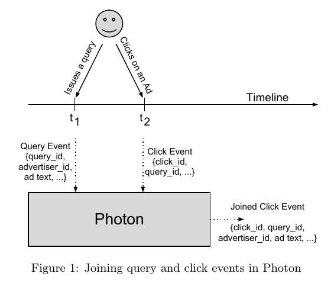
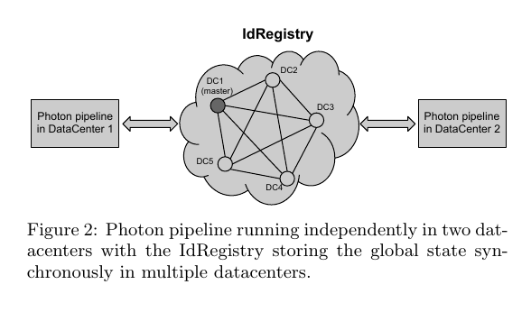
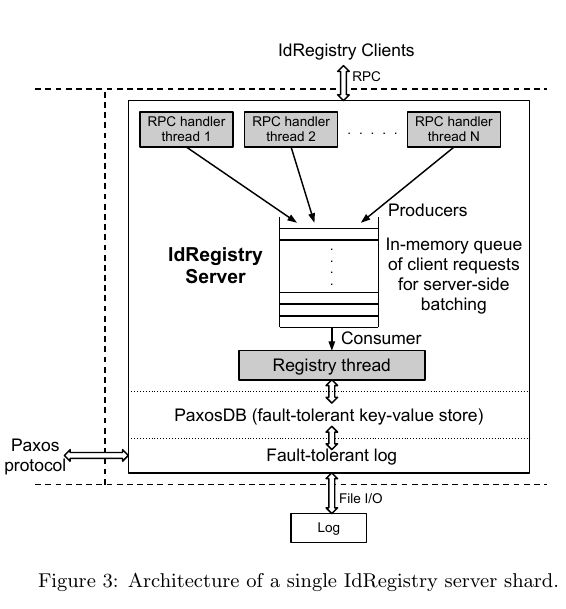
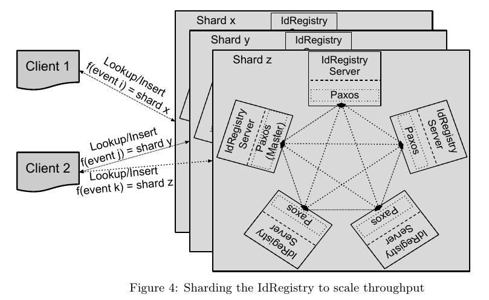
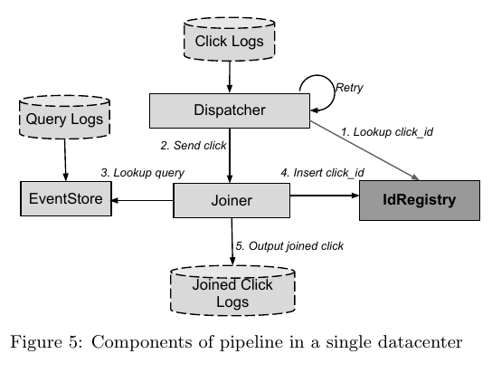
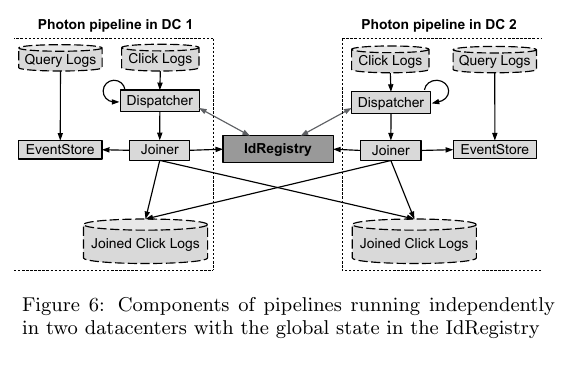

photon
Table of Contents
1 photon
- http://research.google.com/pubs/pub41318.html
- title: Photon: Fault-tolerant and Scalable Joining of Continuous Data Streams
- date: 2013
note(dirlt): 虽然photon也是流式处理系统, 但是并不是通用的流式处理系统, 它只是流式地完成query/click之间的join操作, 应用范围相对有限. MillWheel 才是google的通用流式系统.
1.1 Abstract
- Photon is deployed within Google Advertising System to join data streams such as web search queries and user clicks on advertisements. # 在google广告系统中将搜索和点击关联起来
- Our production deployment processes millions of events per minute at peak with an average end-to-end latency of less than 10 seconds. # 延迟大约在10s级别上
- In this paper, we describe the architecture of Photon, a geographically dis-tributed system for joining multiple continuously flowing streams of data in real-time with high scalability and low latency, where the streams may be unordered or delayed. # 跨地域部署, 并且可以处理乱序和延迟消息.
- Photon guarantees that there will be no duplicates in the joined output (at-most-once semantics) at any point in time, that most joinable events will be present in the output in real-time (near-exact semantics), and exactly-once seman-tics eventually. # 确保输出没有重复(at-most-once). 大部分事件都会近实时地出现在输出. 最终完全并且没有重复(exact-once).
1.2 Introduction
photon user-case大致是这样的:
- user在t1时刻发起query. google对这些query返回结果同时带上ad, 并且标上query_id(query-event). 同时google会将这个事件写入log-datacenters(使用 GFS 存储, key = query_id, value = data-of-event).
- user在这个query返回的页面时候, 如果点击某个广告的话, 那么会向google服务器发起click-event(带上query_id), 服务器为这个click-event分配click_id, 然后将这个事件写入log-datacenters.
- photon会从log-datacenters里面读出query-event and click-event进行join. # 理论上也可以要求客户端把所有内容都返回, 这样就不用join了. 但是出于数据安全以及带宽考虑, 这种方法并不可行.

While building Photon to join continuous data streams, we face these challenges:
- Exactly-once semantics: In prac-tice, to meet the business needs, we require Photon to join 99.9999% events within a few seconds, and 100% events within a few hours. These requirements imply that Photon must provide: a) at-most-once semantics at any point of time, b) near-exact semantics in real-time, and c) exactly-once semantics eventually. # 每个click-event只能处理一次. 几乎所有的click-event要求在秒级别完成, 其余的很小部分要求在小时级别完成.
- Automatic datacenter-level fault-tolerance # 要求能够自动处理datacenter级别故障. 解决办法就是在多个datacenters同时部署互为热备. 考虑到photon是应用在广告系统上, 为了尽可能地提高可用性这样做也是必要的.
- High scalability, Low latency. # 高可扩展, 低延迟
- Unordered streams. # query-event以及click-event写入log-datacenters顺序不一定是timestamp的顺序.
- Delayed primary stream. # click-event可能会比对应的query-event先被处理(这样的话join会失败).
1.3 Paxos-Based ID Registry
- The simplest way to achieve fault-tolerance on commodity hardware is through replication. Extending this prin-ciple to a large collection of machines, we can withstand datacenter-level outage by running the same system in mul-tiple datacenters in parallel. # 通过replication可以达到fault-tolerance的目的. 通过将这个原理扩展到大部分机器的话, 那么我们可以通过在多个datacenters并行运行系统来应对datacenter级别的故障.
- This approach has been applied to almost all web search servers and ad servers at Google to render the systems resilient to datacenter failures with no discontinuity in the level of service. Load balancers auto-matically redirect each user request to the closest running server, where it is processed without the need to consult any other server. # 事实上google web-search server使用的就是这种方式. 前端加上load-balancers来自动在多个datanceters之间进行切换.
- To provide datacenter-level fault-tolerance, Photon work-ers in multiple datacenters will attempt to join the same input event, but workers must coordinate their output to guarantee that each input event is joined at-most-once. # 在多个datacenters计算的话, 同时必须保证一个click-event只能处理一次. 所以我们必须将click-event存储在某个shared-state里面

- The critical state shared between the workers consists of the set of event ids (e.g. click id) that have already been joined in the last N days. This state is stored in the IdRegistry. The constant N is determined by evaluating the trade-off between the cost of storage, and the cost of dropping events that are delayed by more than N days. # 这个shared-state就是IdRegistry. 然后我们设置N, 超过N天的被记录的click-id会被discarded(存储问题).
- Before writing a joined event to output, each worker veri-fies whether the event id already exists in the IdRegistry. If the identifier exists, the worker skips processing the event. Otherwise, the worker attempts to write the event id into the IdRegistry. The worker must successfully insert the event id into the IdRegistry before it can write the joined event to output the logs. The IdRegistry must guarantee that once an event id is written to it, subsequent requests to write the same identifier will fail. # note(dirlt): 这个逻辑优化一下应该是在join之前就应该先查询. 如果已经存在就skip. 否则再处理. 处理完成之后在尝试插入. 如果插入成功就输出. 很明显IdRegistry必须支持trx. 此外IdRegistry还必须能够在多个datanceter之间备份.
下图是IdRegistry架构图. 其中PaxosDB是paxos-based in-memory key-valud store.

- 因为IdRegistry是在多个datanceters部署的, RTT大约在100ms. 也就是说如果顺序commit的话, 那么IdRegistry吞吐量上线最多10trxs/s.
- 1) 我们可以将trxs进行合并来提高吞吐量. 2) 我们可以通过sharding来对IdRegistry进行scale-out.
- 如何动态修改shard数量: 相当于如何同时让多个shard configurations生效. 可以通过时间戳来区分
- 假设开始configuration是这样的: start time : 0, end time : ∞, number of shards : 100
- 然后我们需要增加20个shard, 那么我们可以修改configuration为:
- start time : 0, end time : 5200, number of shards : 100
- start time : 5200, end time : ∞, number of shards : 120
- 为此我们需要确定的是:
- 在ts = 5200之前将这20个shard上线.
- 在上线之前不会出现ts >= 5200的click_event.
- 同时在此之前所有client都能接收到这个configuration.

1.4 Single Datacenter Pipeline
下面两幅图分别是在单个datacenter的pipeline, 以及在多个dantacenters的pipeline.


- logs. note(dirlt): logs存储在GFS上. 但是似乎这里使用file形式并不太自然, message-system会更好些比如kafka
- 如何生成event_id(query_event and click_event) ? (server_ip + process_id + timestamp + id). timestamp通过TrueTime定时同步.
- 所有的server同时向某个(or 几个?)GFS log files追加文件. 因为timestamp会定时同步, 所以一个log file里面日志数据基本是按照timestamp排序的.
- dispatcher. 从click_logs读取click_event. 然后使用event_id查询IdRegistry. 如果已经存在的话那么直接丢弃, 否则转发给joiner.
- joiner. 完成join过程并且将输出写到logs. 在输出之前会尝试插入event_id, 如果成功才会插入.
- 如果出现query_log delay情况的话, 那么joiner查找不到任何数据. 那么joiner会通知dispatcher稍后重试. 指数退避.
- 如果joiner有太多requests in flight, 那么会给dispatcher反馈, 以此达到throttling目的. 另外限制数量的原因是想减少因为crash而丢失的数据.
- event_store. 从query_logs读取query_event存储起来以便为joiner提供查询.
- 分为两层 1)CacheEventStore. 2)LogsEventStore.
- CacheEventStore 存储query_id -> file offset. 放在memcached里面. 能够支撑90%的流量
- LogsEventStore 支撑10%的流量. 但是如果需要join的是old click logs的话, 那么查询都是走这里(因为CacheEventStore只保留了最近一段时间的query_log)
- LogsEventStore 实现原理则是按照timestamp做table scan. 在bigtable上存储(timestamp)为prefix的rowkey. value可以是文件名称和偏移.
Minimizing Joiner Losses
- 如果joiner请求insert click_id, 但是RPC返回超时如何处理? IdRegistry内部可能已经记录了这个click_id.
- joiner可以为自己分配一个UUID/token. 在insert click_id时候带上这个token, IdRegistry也记录这个token.
- joiner在重试的时候带上这个token. 这样IdRegistry在对比的时候如果上次token和本地token相同, 那么直接返回true.
Verification and Recovery
- 如果成功写入之后joiner crash, 或者是joiner成功写入click_id但是写入output_logs失败, 那么就需要人工介入处理.
- 人工处理可以对比input click_logs和output joined_click_logs. 如果某click_id没有出现的话, 那么就在IdRegistry找到这个click_id对应的token
- 通过token我们可以找到具体是哪个joiner出了问题. 确定问题之后将从IdRegistry里面删除这个click_id, 然后从源头feed进去即可重算.
- 在对比的时候我们还可以从IdRegistry删除那些已经出现在output click_logs里面的click_id对应的token.